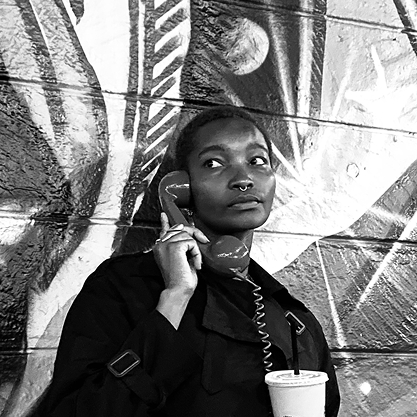

Maasai Art
Jacque Njeri

About the Artist
Njeeri is an artist and creative synthesist based in Nairobi whose work explores the intersection
of African identity, mythology, technology, and speculative futures. Through A.EYE, her coming
of age visual language and world building practice, Area Nyaga, she centers Africa as an active
participant in shaping her future.
A huge fan of radical self expression, San'aa uses art for immersive storytelling to inspire
audiences to expand their perspectives and imagine new frontiers by way of memory and dreams.
Her most recognized works include the MaaSci Series, featured on CNN and BBC, and exhibited
across Africa, America, and Europe. Shestory (2017), is currently on display as part of the
Art Inspired by the Celestial exhibition by Saatchi Gallery.